WI
WORLD INVASION
STRATEGIC INTERFACE
YEAR 01
DAY 001
Ⅱ
×1
×2
×5
×10
×50
HUMAN AWARENESS
—
ANALYSIS
2 / 2
WORLD ENGINE
LIVE
ORBITAL OBSERVATION
EARTH / GLOBAL MODEL
REAL WORLD BASELINE · LIVE SIMULATION
←
→
−
+
FIT
FOCUS
FOLLOW
RESET
Vue globe
Vue monde
Choisir un pays
Aucun pays sélectionné
Effacer la sélection